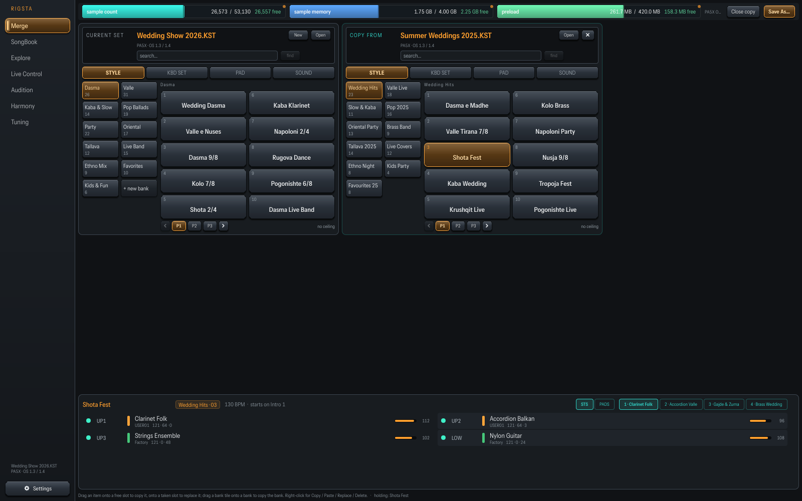
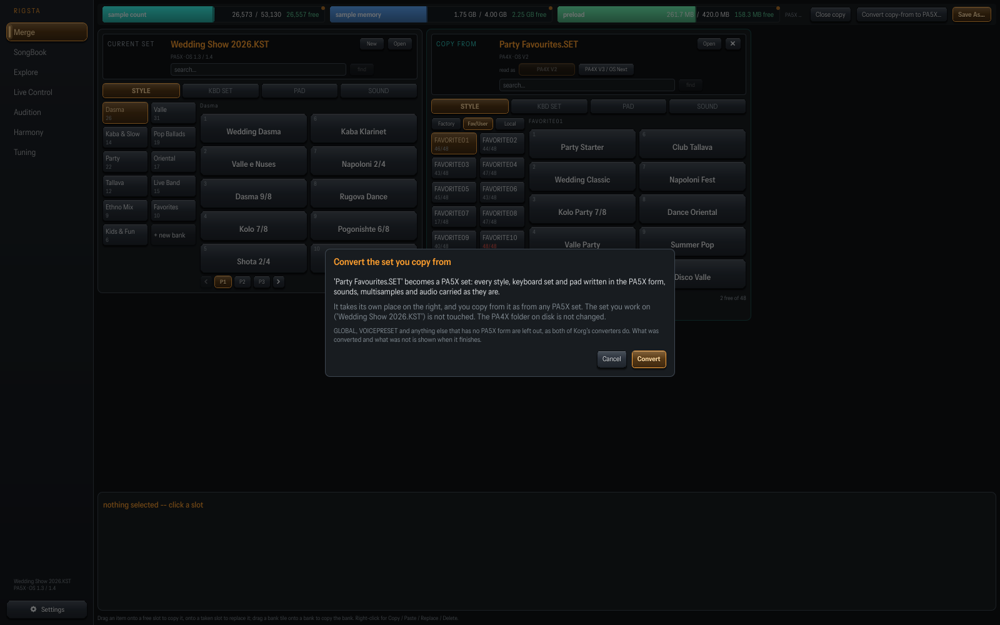
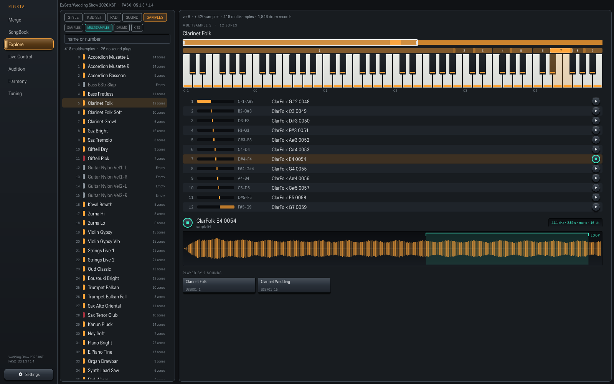
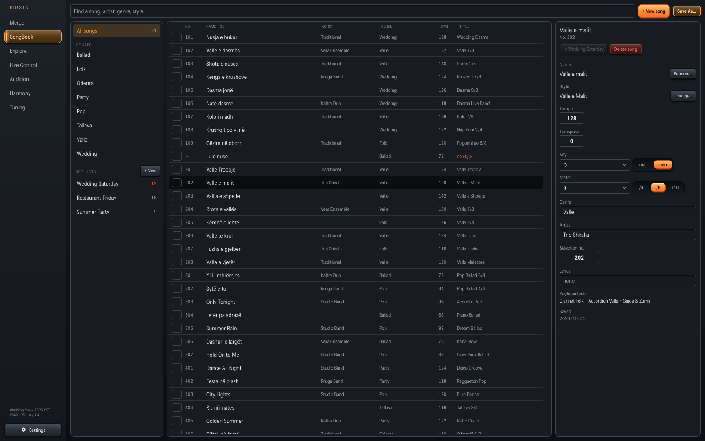
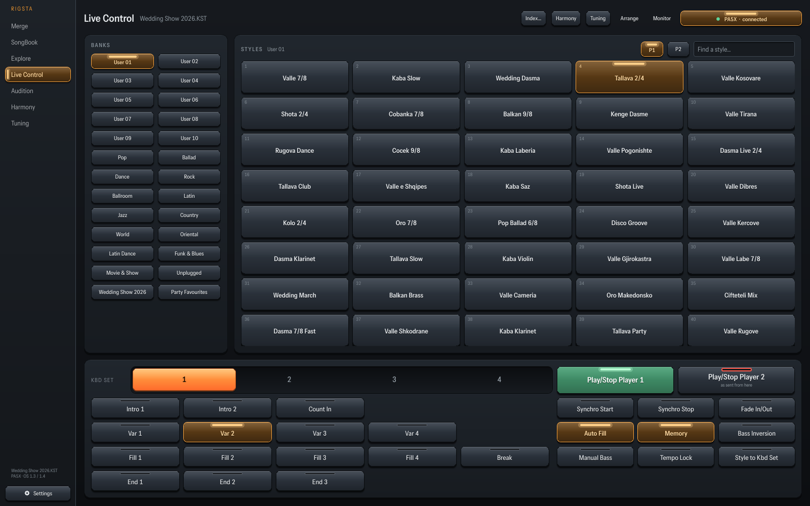
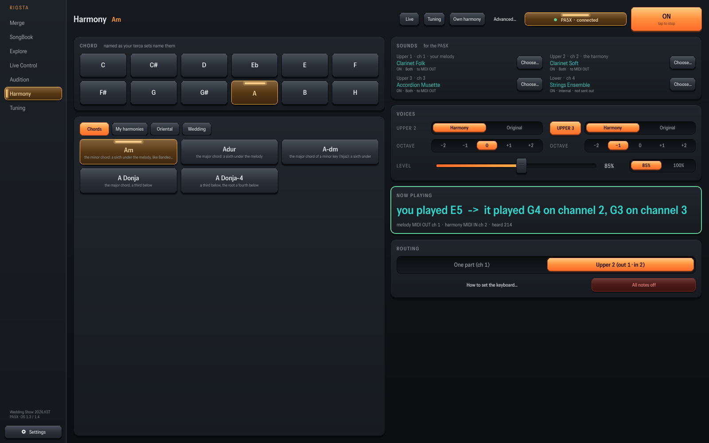
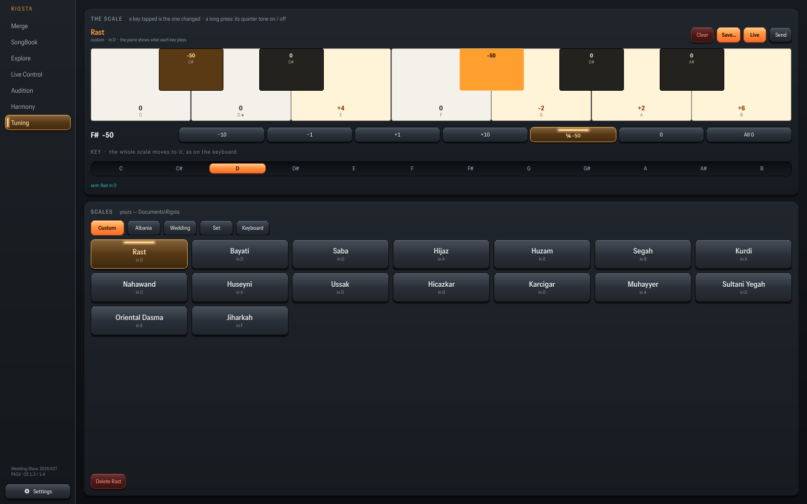
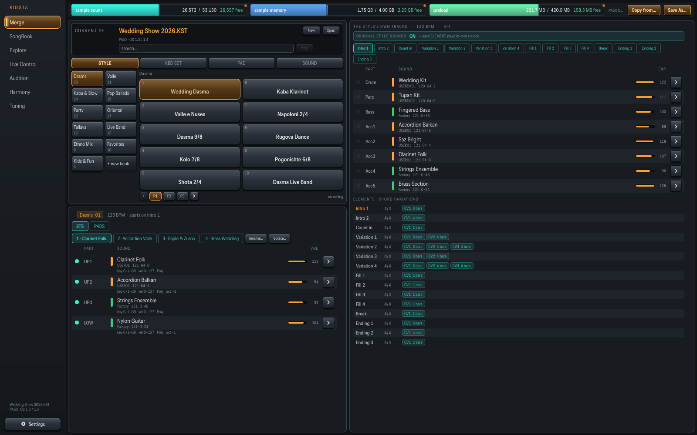
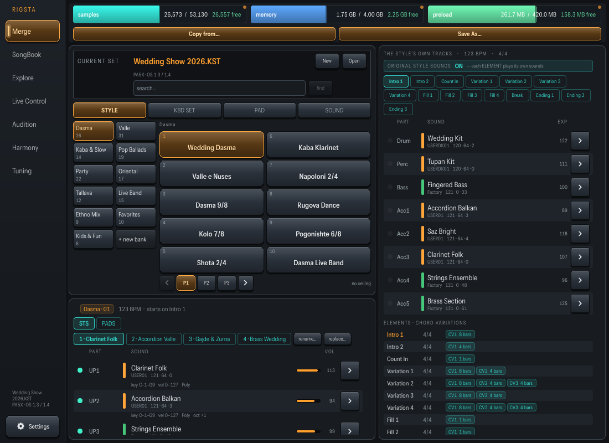
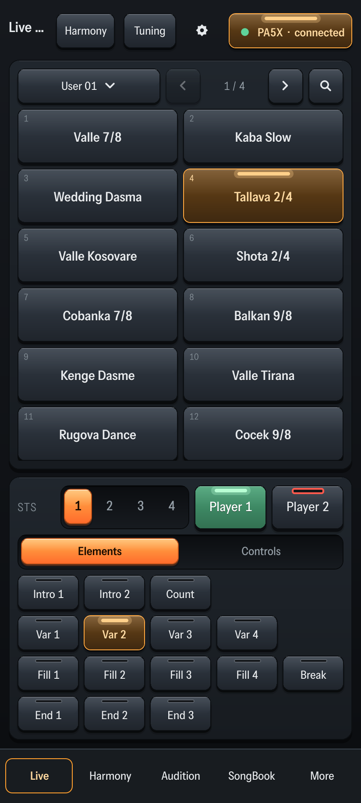

Merge
Drag styles, keyboard sets, pads and sounds from one set into another. The sounds, samples, STS and pads an item needs travel with it, and a sound already there is not copied twice.
How to merge →We have temporarily pulled the app from the download page while we sort out some technical issues where some devices are passing the minimum requirement checks but not activating properly.
We will keep everyone posted and will refund anyone who purchased and is unable to activate.
We also might offer a trial lottery to folks that sign up on this page for a 3-day trial of the full app. Please follow us on Facebook: Rigsta on Facebook
Details still to come.
For Korg Pa4X & Pa5X · Windows · Android
Rigsta opens your Korg Pa4X and Pa5X sets so you can explore and hear every sound and sample inside them, merge and convert between sets, organise your SongBook, and turn your PC, tablet or phone into a live controller with harmony and tuning.

Drag styles, keyboard sets, pads and sounds from one set into another. The sounds, samples, STS and pads an item needs travel with it, and a sound already there is not copied twice.
How to merge →
Convert the set you are working on, or convert a Pa4X set in place and drag the parts you want into your Pa5X set. The Pa4X folder you open is never changed.
How to convert →
Every sound drawn as its shape on a piano. Every sample, zone and drum key plays at a tap, coloured by where it lives in the set.
Explore a set →
One list of your songs, searchable by name, artist, genre and style. Add a song from a style, set its key, meter and tempo, and build set lists for the night.
Open the SongBook →
Every style a tap away, with STS, elements and transport on one deck you can arrange to your liking. The lights follow the keyboard.
Play live →
A scale-true second voice from your melody. Use the built-in harmonies, or build and save your own in any key. The melody is never delayed; only the harmony passes through the app.
Add harmony →
Oriental and Balkan scales and quarter tones, sent to the keyboard in one tap. Save your own scales, each on its own key. Clear returns to equal temperament.
Tune it →A layout made for each screen. A rail of pages on a PC and tablet; the stage pages as tabs at your thumbs on a phone. Long-press for the copy menu, swipe through the styles.



Rigsta installs free and opens in Free Audition mode: audition Pa5X styles on your keyboard. Buy a licence and enter your key in the app to unlock merging, conversion, sound editing and every page.
Install Rigsta and try it in Free Audition mode before you buy.